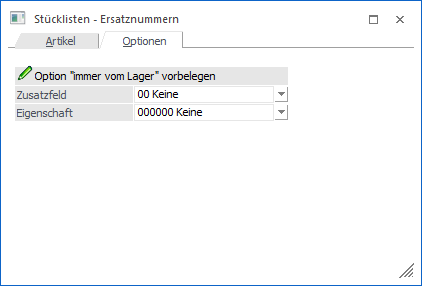
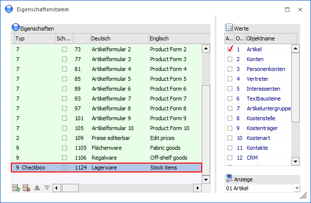
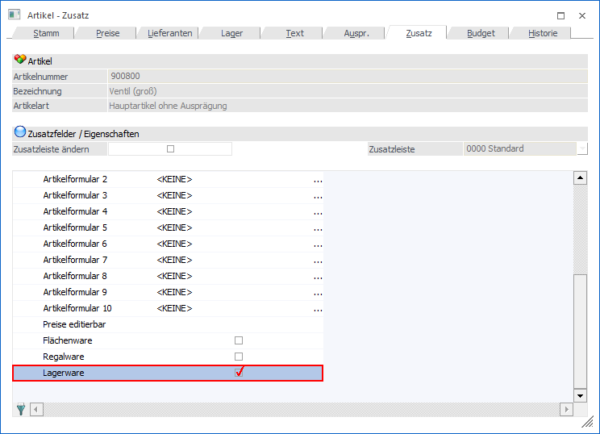
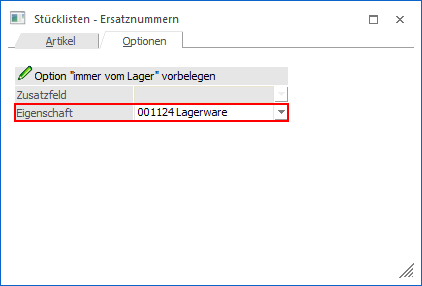
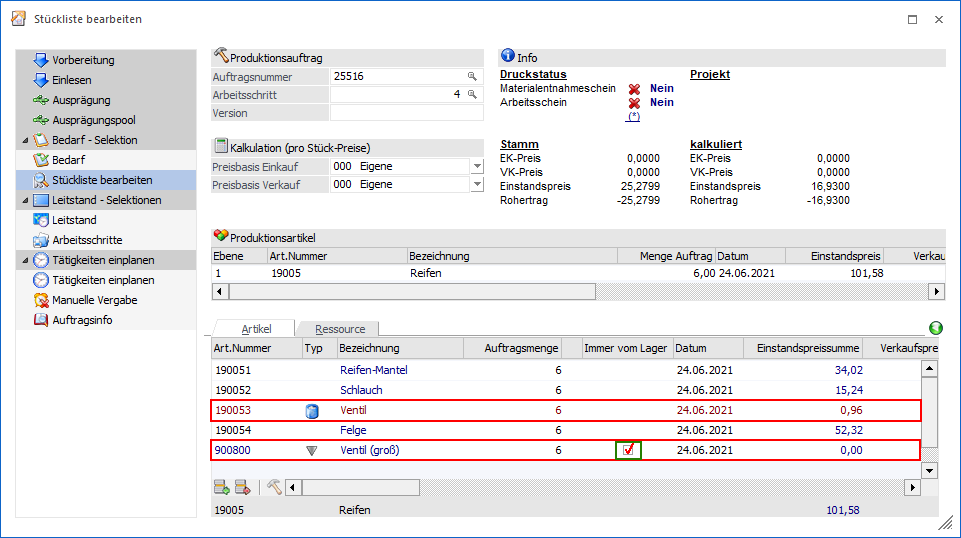

Über das Register "Optionen" kann gesteuert werden, ob die Option "Immer vom Lager" automatisch gesetzt werden soll, wenn ein neuer Halbfertigartikel (Produktionsartikel) in einen bestehenden Produktionsauftrag eingefügt wird.

Damit das automatisch aktivieren der Option funktioniert, muss auf ein spezielles Zusatzfeld oder eine Eigenschaft aus den Artikeln verwiesen werden, welcher als Steuerungswert dient.
Beispiel
Das Halbfertigprodukt "190053" soll in der Stückliste "Reifen" (in Produktionsartikel "19005" hinterlegt) immer produziert werden, d.h. in der Stückliste ist Checkbox "Immer vom Lager" nicht aktiviert. Anstelle des Artikels "190053" soll fallweise der Artikel "900800" verwendet werden, welcher ebenfalls ein Produktionsartikel ist. D.h. Artikel "190053" wird mit Artikel "900800" im Fenster "Stückliste Bearbeiten" ausgetauscht (manuell oder automatisch).
Da Artikel "900800" aber immer in großen Mengen auf Lager produziert wird, soll dieser natürlich immer vom Lager genommen werden, statt pro PPS-Auftrag produziert zu werden. Deshalb wird eine Eigenschaft im Artikelstamm hinzugefügt, die bewirkt, dass beim Einfügen vom Artikel "900800" (manuell oder automatisch) in die Stückliste die Option "Immer vom Lager" automatisch aktiviert wird. In der Folge wird der Artikel vom Lager abgebucht und für diesen Produktionsauftrag nicht separat produziert.
ü Anlage der Eigenschaft
(Zusatzfeld)

Hinweis
Statt einer Eigenschaft kann alternativ ein Zusatzfeld aufgenommen werden (Zusatzfeldwert = 1 Ja / = 0 Nein).
ü Aktivierung der Eigenschaft im
Artikelstamm

ü Einstellung in "Stücklisten -
Ersatznummern"(Register "Optionen")

Hinweis
Falls als Steuerungsfeld ein Zusatzfeld dient, so wird unter dem Punkt "Zusatzfeld" die entsprechende Hinterlegung getroffen.
ü Stückliste bearbeiten
